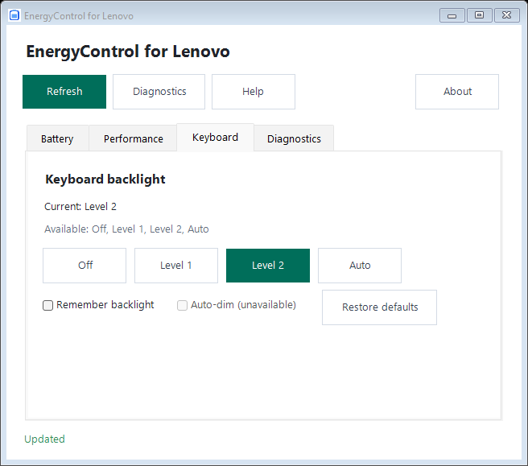
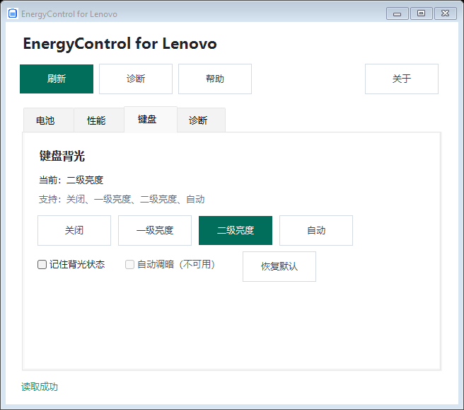
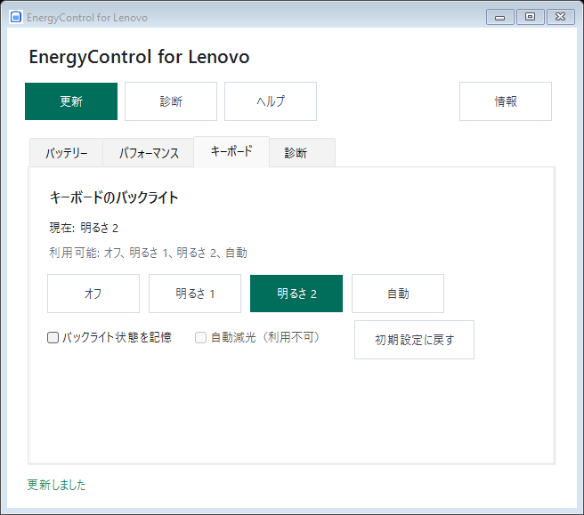

EnergyControl for Lenovo
English | 简体中文 | 日本語
EnergyControl for Lenovo is an unofficial portable Windows utility for compatible Lenovo laptops. It provides a desktop interface and command-line tools for charging modes, performance modes, charge thresholds and keyboard backlight controls.
Available controls depend on the laptop model, firmware, drivers and installed Lenovo components. The application does not include Lenovo private DLLs, telemetry, a background service, an installer or an automatic updater.
Get started
- Download and extract the Windows x64 ZIP from Releases.
- Verify it with
Get-FileHash .\<downloaded-file>.zip -Algorithm SHA256.
- Run
EnergyControl.exe for the desktop interface, or use the command line in PowerShell.
Windows 10/11 x64 and .NET Framework 4.8 are required. Releases are unsigned preview builds.
Features
| Feature |
Examples |
Availability |
| Charging modes |
Normal, conservation, express |
Compatible EnergyDrv / ACPIVPC driver or Lenovo Addin |
| Charge thresholds |
Start and stop percentages |
Optional Lenovo Power RPC service and firmware support |
| Performance modes |
Auto, quiet, performance, geek |
Compatible installed Lenovo Addin |
| Keyboard backlight |
Off, level 1, level 2, auto |
Compatible IdeaNotebookAddin and firmware |
| Diagnostics |
Device state, capabilities and errors |
Read-only checks of available integrations |
Conservation mode uses a firmware-defined limit and does not imply arbitrary percentage support. Unsupported features remain unavailable and do not prevent other features from working.
Desktop interface
The GUI follows the Windows display language at startup: zh-* uses Simplified Chinese, ja-* uses Japanese, and other languages use English. The Help button opens the bundled README.html in the selected language. The interface includes Battery, Performance, Keyboard and Diagnostics tabs.
Changes require confirmation and are followed by a fresh device read. Unsupported actions are disabled, and unavailable threshold controls are hidden.

The screenshot uses simulated device data for layout verification. Available controls depend on the local machine.
Command line
Read-only examples:
.\EnergyControl.exe status
.\EnergyControl.exe diagnose
.\EnergyControl.exe charge direct get
.\EnergyControl.exe charge threshold get
.\EnergyControl.exe performance get
.\EnergyControl.exe keyboard-backlight get
Every write requires --apply:
.\EnergyControl.exe charge direct set conservation --apply
.\EnergyControl.exe charge threshold set 75 80 --apply
.\EnergyControl.exe performance set quiet --apply
.\EnergyControl.exe keyboard-backlight set level1 --apply
.\EnergyControl.exe keyboard-backlight restore-default --apply
Accepted values include normal, conservation, express, auto, quiet, performance, geek, off, level1 and level2. Run EnergyControl.exe help for the complete command reference.
Build and verify
Use a .NET SDK that can build SDK-style net48 projects on Windows and PowerShell 7 for the test scripts. Lenovo DLLs are not required to compile or run the simulated tests.
.\build.ps1
.\tests\run-tests.ps1
.\verify-layout.ps1
The portable executable is generated at artifacts\publish\EnergyControl.exe. The build also generates offline multilingual help from the three README files.
Project policies
See Contributing, Security, Disclaimer and Changelog.
Licensed under GPL-3.0-only. Lenovo is referenced only to describe compatibility. This project is not affiliated with or endorsed by Lenovo.
EnergyControl for Lenovo
English | 简体中文 | 日本語
EnergyControl for Lenovo 是一款面向兼容联想笔记本的非官方 Windows 便携工具，提供图形界面和命令行，用于管理充电模式、性能模式、充电阈值和键盘背光。
实际可用控件取决于机型、固件、驱动和本机安装的 Lenovo 组件。本程序不包含 Lenovo 私有 DLL、遥测、后台服务、安装器或自动更新。
快速开始
- 从 Releases 下载并解压 Windows x64 ZIP。
- 使用
Get-FileHash .\<下载的文件>.zip -Algorithm SHA256 校验文件。
- 运行
EnergyControl.exe 打开图形界面，或在 PowerShell 中使用命令行。
需要 Windows 10/11 x64 和 .NET Framework 4.8。发布包是未签名的预览版本。
功能
| 功能 |
示例 |
可用条件 |
| 充电模式 |
常规、养护、快充 |
兼容的 EnergyDrv / ACPIVPC 驱动或 Lenovo Addin |
| 充电阈值 |
起充和停充百分比 |
可选 Lenovo Power RPC 服务及固件支持 |
| 性能模式 |
自动、安静、高性能、极客 |
兼容的 Lenovo Addin |
| 键盘背光 |
关闭、一级、二级、自动 |
兼容的 IdeaNotebookAddin 及固件 |
| 诊断 |
状态、能力和错误 |
对可用接口进行只读检查 |
养护模式使用固件定义的限制，不代表支持任意百分比。不可用功能会保持禁用，不会阻止其他功能运行。
图形界面
GUI 启动时跟随 Windows 显示语言：zh-* 使用简体中文，ja-* 使用日文，其余语言使用英文。帮助按钮会以当前语言打开内置的 README.html。界面包含电池、性能、键盘和诊断四个标签页。
修改设置需要确认，应用后会重新读取设备状态。不支持的操作会禁用，不可用的充电阈值控件会隐藏。

截图使用模拟设备数据进行布局验证，实际控件取决于本机能力。
命令行
只读示例：
.\EnergyControl.exe status
.\EnergyControl.exe diagnose
.\EnergyControl.exe charge direct get
.\EnergyControl.exe charge threshold get
.\EnergyControl.exe performance get
.\EnergyControl.exe keyboard-backlight get
所有写入都需要 --apply：
.\EnergyControl.exe charge direct set conservation --apply
.\EnergyControl.exe charge threshold set 75 80 --apply
.\EnergyControl.exe performance set quiet --apply
.\EnergyControl.exe keyboard-backlight set level1 --apply
.\EnergyControl.exe keyboard-backlight restore-default --apply
可用模式包括 normal、conservation、express、auto、quiet、performance、geek、off、level1 和 level2。运行 EnergyControl.exe help 查看完整命令说明。
构建与验证
在 Windows 上使用能够构建 SDK 风格 net48 项目的 .NET SDK，并使用 PowerShell 7 运行测试脚本。编译和模拟测试不需要 Lenovo DLL。
.\build.ps1
.\tests\run-tests.ps1
.\verify-layout.ps1
便携版程序生成在 artifacts\publish\EnergyControl.exe。构建过程还会从三份 README 生成离线多语言帮助页面。
项目规则
参阅贡献指南、安全策略、免责声明和变更记录。
本项目采用 GPL-3.0-only 许可证。Lenovo 仅用于说明兼容目标，本项目与联想无隶属关系，也未获得联想背书。
EnergyControl for Lenovo
English | 简体中文 | 日本語
EnergyControl for Lenovo は、対応する Lenovo ノート PC 向けの非公式 Windows ポータブルツールです。GUI とコマンドラインから、充電モード、パフォーマンスモード、充電しきい値、キーボードバックライトを操作できます。
利用できる機能は、機種、ファームウェア、ドライバー、インストール済みの Lenovo コンポーネントによって異なります。Lenovo の非公開 DLL、テレメトリ、常駐サービス、インストーラー、自動更新は含みません。
はじめに
- Releases から Windows x64 ZIP をダウンロードして展開します。
Get-FileHash .\<ダウンロードしたファイル>.zip -Algorithm SHA256 で確認します。EnergyControl.exe を実行して GUI を開くか、PowerShell からコマンドラインを使用します。
Windows 10/11 x64 と .NET Framework 4.8 が必要です。リリースは未署名のプレビュービルドです。
機能
| 機能 |
例 |
利用条件 |
| 充電モード |
通常、バッテリー保護、急速充電 |
対応する EnergyDrv / ACPIVPC ドライバーまたは Lenovo Addin |
| 充電しきい値 |
開始・停止割合 |
オプションの Lenovo Power RPC サービスとファームウェア |
| パフォーマンス |
自動、静音、高性能、エキスパート |
対応する Lenovo Addin |
| キーボードバックライト |
オフ、レベル 1、レベル 2、自動 |
対応する IdeaNotebookAddin とファームウェア |
| 診断 |
状態、能力、エラー |
利用可能なインターフェースの読み取り専用検査 |
バッテリー保護モードの上限はファームウェアによって決まり、任意の割合を設定できるとは限りません。利用できない機能は無効になり、他の機能には影響しません。
デスクトップ画面
GUI は起動時の Windows 表示言語に従います。zh-* は簡体字中国語、ja-* は日本語、それ以外は英語です。ヘルプボタンは選択中の言語で付属の README.html を開きます。画面にはバッテリー、パフォーマンス、キーボード、診断のタブがあります。
設定変更には確認が必要で、適用後にデバイス状態を再読み込みします。対応しない操作は無効になり、利用できない充電しきい値の入力欄は非表示になります。

画像はレイアウト検証用のシミュレーションデータを使用しています。実際の機能は端末によって異なります。
コマンドライン
読み取り専用の例：
.\EnergyControl.exe status
.\EnergyControl.exe diagnose
.\EnergyControl.exe charge direct get
.\EnergyControl.exe charge threshold get
.\EnergyControl.exe performance get
.\EnergyControl.exe keyboard-backlight get
書き込みには必ず --apply が必要です：
.\EnergyControl.exe charge direct set conservation --apply
.\EnergyControl.exe charge threshold set 75 80 --apply
.\EnergyControl.exe performance set quiet --apply
.\EnergyControl.exe keyboard-backlight set level1 --apply
.\EnergyControl.exe keyboard-backlight restore-default --apply
利用できる値には normal、conservation、express、auto、quiet、performance、geek、off、level1、level2 があります。完全な一覧は EnergyControl.exe help で確認できます。
ビルドと検証
Windows で SDK スタイルの net48 プロジェクトをビルドできる .NET SDK と、テストスクリプト用の PowerShell 7 を使用してください。コンパイルとシミュレーションテストに Lenovo DLL は必要ありません。
.\build.ps1
.\tests\run-tests.ps1
.\verify-layout.ps1
ポータブル実行ファイルは artifacts\publish\EnergyControl.exe に生成されます。ビルド時には三つの README からオフライン多言語ヘルプも生成されます。
プロジェクトの方針
コントリビューション、セキュリティ、免責事項、変更履歴を参照してください。
GPL-3.0-only で公開しています。Lenovo は互換性を説明するためだけに記載しており、本プロジェクトは Lenovo と提携しておらず、承認も受けていません。